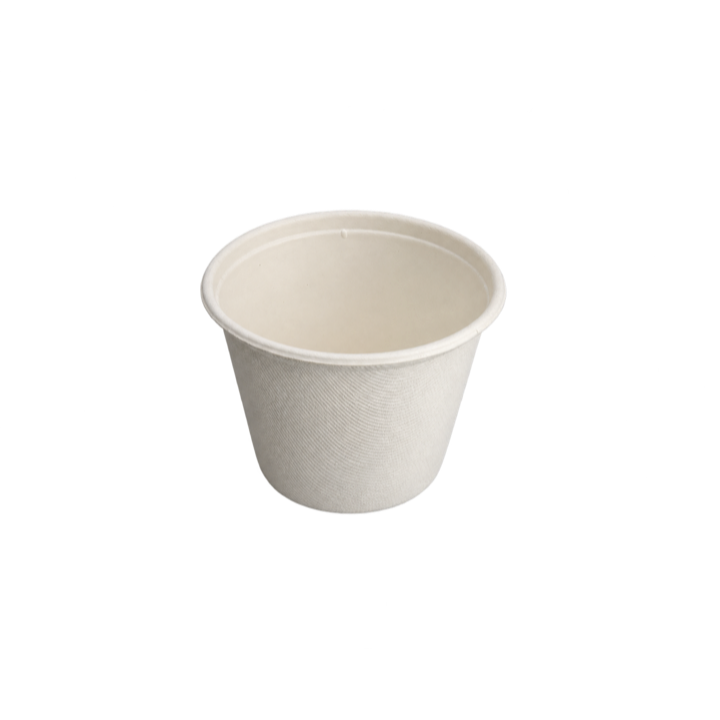
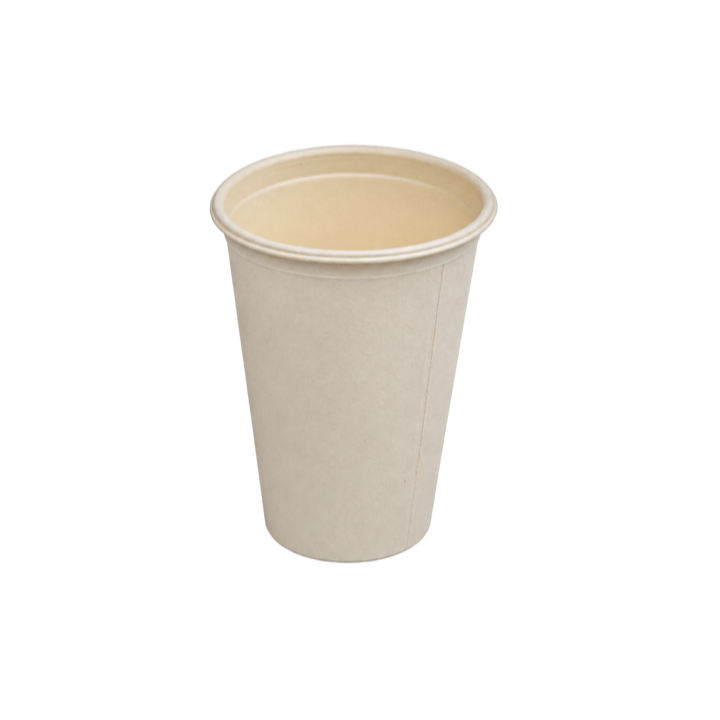

SUSTAINO PACKAGING TH
Packaging that works beautifully.
A curated range of foodservice packaging with clear specifications for restaurants, cafés, delivery teams and more.


A curated range of foodservice packaging with clear specifications for restaurants, cafés, delivery teams and more.

